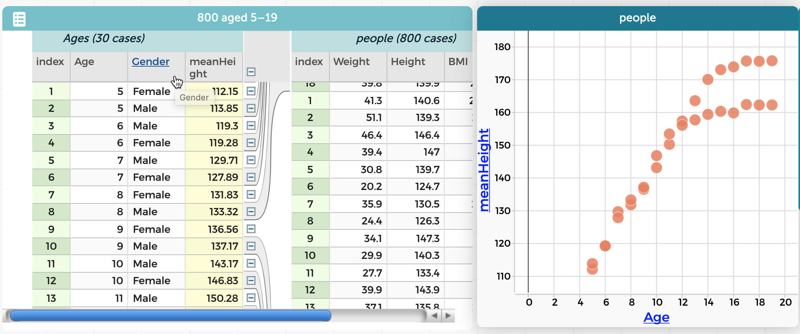
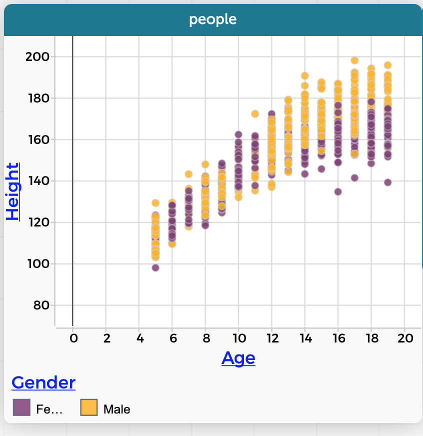

5 citation-location: margin
| reference-locati | on: margin |
|---|---|
mean(foo) |
the mean of foo |
median(foo) |
the median of foo |
sum(foo) |
add up the values of foo |
count() |
how many cases there are |
5.1 Finishing Our Investigation
The new column, MeanHeight, is first-class data like every other column. That means you can make a graph using these mean heights. So do it!
- Make a new graph; put
Ageon the horizontal axis andMeanHeighton the vertical.
You will see the pattern you might expect: people get taller as they age, up to a point.1
We still don’t see the gender differences. Here’s what you do. Watch what happens carefully and make sure you understand it.
- Drag
Genderleft in the table and drop it next toAge.
Each item in the left table splits into males and females. So where there were the 15 ages before, now there are 30 age-gender combinations. Also, the right-hand table is now divided into 30 groups, one for each age-gender combination. The MeanHeight column now automatically shows the mean height for the cases in that group.

There are also now 30 dots in the graph, one for each group instead of one for each person. But which dots are for the males and which for the females?
- Drag
Genderfrom the table and plop it into the middle of the graph. The points color to show which is which. You should see the graph on the right:

Height.
MeanHeight for every age-gender group.Notice what a clean, clear story it tells. Boys’ and girls’ heights are about the same—girls a little taller in the tweens— until about age 13, at which point boys keep growing while the girls slow down. The left-hand graph has all the data, but it doesn’t tell the story as clearly as the right-hand graph.
Data-move reflection: When we moved Gender left, we changed the grouping, and took advantage of the summarizing that was already in place.
5.2 Commentary
This is the conceptual heart of this unit.
Grouping and summarizing are at the center af a huge amount of data analysis. The process is surprsingly deep, too: a group of programmers made this capability in CODAP, and even they didn’t realize how important, how useful it turned out to be. We guarantee you that no student, no matter how brilliant, will fully understand the consequences of that drag-left-in-the-table gesture. One miracle is the way that, when you dragged Gender left to join Age, those two attributes combined to define 30 groups instead of 152, and the formula column adjusted so that it consistently calculated mean height for every group.
At the same time, it’s only sorting the data into groups and taking the mean. It is not rocket science. It’s not even AP Statistics. I think there are really two reasons this is hard.
One is that there’s so much data, we need the computer to help. That means instructing it—by dragging left3— as to what, precisely, we want it to do. That involves computational thinking, having a sense of what kinds of things the computer can do, and the kinds of instructions that work.
But the other reason it’s hard is more insidious: you have to want to group by age and gender, and then take the mean of each group.
So, how to teach it? As with the first part of our height investigation, I did much of this lesson as a demo, with students following along. I went slowly, asking and answering questions, going back and repeating sections as students got their screens to show what they saw on mine. You can let students know that if they forget any of it when they’re doing future work, they can find a step-by-step description in this book. The next assignment will give them a chance to practice these skills.
As a teacher, you will need to be patient but persistent as students gradually come to understand how this works. You can get additional help and perspective in the “data move” chapters on Grouping and Summarizing.
As to developing an intuition about what to group by and why, and how to summarize, my conjecture is that by seeing it a few times, many students will start to get it, even without being able to articulate what’s going on. I also believe, though, that we teachers can gently point out and name the data moves we are making, and remark on their consequences. (“And look! By grouping and summarizing, we now have only 30 points instead of 800. What do you think? Is this graph easier to understand?”)
With that prodding, we nudge them towards metacognition.
Summarizing loses information
Do not think for a moment, however, that summarizing is a panacea. It’s a tool, and we must recognize its limitations and weaknesses. Sure, we went from 800 points down to 30. What happened to those 770 missing points?
The sweep of the means in our graph is lovely, and elegantly shows the overall pattern of growth of girls and boys, but it ignores the individuals. It ignores variability.
Therefore, even if there is no time for a whole lesson on this topic, be sure to ring that chime from time to time. Ask, does this graph mean that every seven-year-old is this height? Or show a graph of only sixteen-year-olds. Notice that some girls are taller than a lot of the boys, and that some boys are really short. Invite students to speculate how they could draw a graph that showed the overall story and, at the same time, showed the variability.
That is, rescue students from the tyranny of the center. As a society we are often held in thrall. We hear that median home prices in Westview are higher than in Dust Gulch, so we assume that evey home is Dust Gulch is a shack and every one in Westview a mansion. We read that test scores (which are always mean test scores) are higher in Blue Sky Unified, so we assume that our children will get a good education only if we move there.